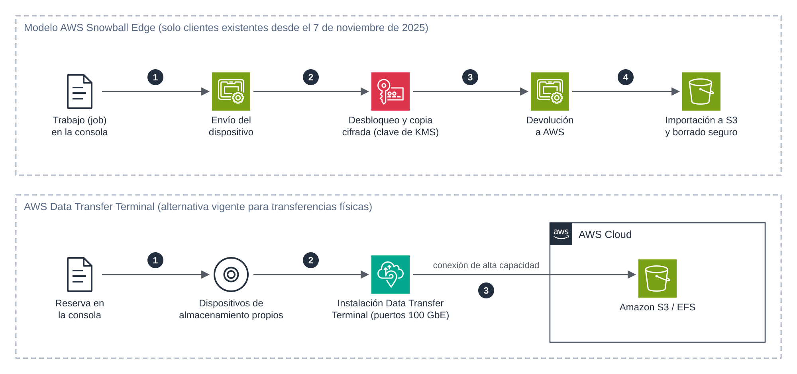

UD5 · 5. Transferencia fuera de línea¶
1. Introducción¶
Cuando el volumen de datos es muy grande o la conectividad es insuficiente, transferir por red puede tardar semanas o meses (véase el apartado 5 del documento 1). En estos casos, puede ser más rápido transportar físicamente los datos hasta un punto de carga de AWS. Esta modalidad se denomina transferencia fuera de línea (offline).
Durante una década, la solución de AWS para este escenario fue la familia AWS Snow: dispositivos que AWS enviaba al cliente. En 2025 esta oferta dejó de estar disponible para nuevos clientes, y AWS orienta ahora la transferencia física hacia AWS Data Transfer Terminal. Este documento estudia ambos modelos: el primero, por su valor conceptual y porque sigue en uso por clientes existentes; el segundo, como alternativa vigente.
Objetivos¶
- Determinar cuándo está justificada una transferencia fuera de línea.
- Describir el ciclo de vida de un trabajo de importación con Snowball Edge y sus garantías de seguridad.
- Conocer la situación actual de la familia Snow y sus alternativas.
- Describir el funcionamiento y el modelo de costes de AWS Data Transfer Terminal.
2. ¿Cuándo transferir fuera de línea?¶
Se considera la transferencia física cuando se cumple alguna de estas condiciones:
- El tiempo estimado de transferencia por red supera el plazo disponible para el proyecto (como orientación, más de una semana).
- El enlace de red es necesario para la actividad diaria y no puede dedicarse a la migración.
- El origen está en una ubicación remota con conectividad escasa o inexistente.
- Ampliar temporalmente el ancho de banda resulta más caro que el transporte físico.
Antes de optar por ella, conviene comprobar si basta con transferir solo los datos activos o con contratar una conexión dedicada temporal (AWS Direct Connect) y usar DataSync.
3. La familia AWS Snow¶
3.1. Evolución y situación actual¶
| Dispositivo | Características | Situación |
|---|---|---|
| Snowcone | Dispositivo pequeño y ligero para entornos de borde. | Retirado: no puede pedirse desde noviembre de 2024. |
| Snowball Edge Storage Optimized | Dispositivo robusto para transferencia masiva; la última generación ofrece 210 TB. | Solo para clientes existentes antes del 7 de noviembre de 2025. |
| Snowball Edge Compute Optimized | Orientado a computación en el borde, con almacenamiento local. | Solo para clientes existentes antes del 7 de noviembre de 2025. |
| Snowmobile | Contenedor de transporte para volúmenes de exabytes. | Retirado. |
Desde el 7 de noviembre de 2025, AWS no acepta nuevos clientes en Snowball Edge. Para nuevos proyectos recomienda:
- AWS DataSync para transferencias en línea.
- AWS Data Transfer Terminal para transferencias físicas seguras.
- Soluciones de socios de AWS para casos específicos.
- AWS Outposts como alternativa a los casos de computación en el borde.
3.2. Ciclo de vida de un trabajo de importación¶
Aunque ya no puede contratarse, el modelo Snowball ilustra bien las garantías que exige cualquier transferencia física:

Figura 5. Ciclo de un trabajo de importación con Snowball Edge (arriba) y flujo de carga con AWS Data Transfer Terminal (abajo).
- Creación del trabajo en la consola: tipo (importación a S3, exportación desde S3 o computación local), bucket de destino, clave de AWS KMS y dirección de envío.
- Envío del dispositivo al cliente. Su estado puede seguirse mediante notificaciones de Amazon SNS.
- Desbloqueo y copia local. El cliente descarga de la consola un manifiesto y un código de desbloqueo, que se distribuyen por separado, y desbloquea el dispositivo con el cliente de Snowball Edge. Los datos se copian mediante su interfaz compatible con S3 o mediante NFS y se cifran en el propio dispositivo.
- Devolución. La etiqueta de envío electrónica del dispositivo se actualiza automáticamente con la dirección de AWS.
- Importación y borrado. AWS carga los datos en el bucket y, a continuación, borra el dispositivo siguiendo las directrices del NIST para la sanitización de soportes.
3.3. Garantías de seguridad¶
- Cifrado obligatorio con claves de 256 bits gestionadas en AWS KMS. Las claves no se almacenan en el dispositivo.
- Separación de credenciales: el manifiesto y el código de desbloqueo se obtienen por separado; con uno solo no se puede acceder a los datos.
- Protección física: carcasa con detección de manipulación y módulo de plataforma segura (TPM).
- Cadena de custodia trazable durante todo el transporte.
- Borrado certificado tras la importación.
4. AWS Data Transfer Terminal¶
4.1. Funcionamiento¶
AWS Data Transfer Terminal es una red de instalaciones físicas seguras a las que el cliente lleva sus propios dispositivos de almacenamiento para cargar los datos en AWS mediante una conexión de alta capacidad. A diferencia de Snowball, no es AWS quien envía un dispositivo: es el cliente quien se desplaza.
El proceso es el siguiente:
- Reserva de una franja horaria en la consola de AWS, indicando el personal autorizado.
- Desplazamiento a la instalación con los dispositivos. El acceso es controlado y la ubicación exacta de la sala se mantiene discreta por seguridad.
- Conexión de los dispositivos a los puertos de red de alta velocidad (por ejemplo, de 100 GbE) mediante fibra óptica.
- Carga de los datos a los endpoints públicos de AWS (Amazon S3, Amazon EFS y otros) y verificación de la transferencia.
En febrero de 2026, el servicio contaba con 11 ubicaciones en el mundo. En Europa estaban disponibles Múnich, Londres y París.
4.2. Modelo de costes¶
Se factura por hora de puerto reservada, aunque no se esté transfiriendo. El precio depende de la ubicación del terminal y de la región de destino.
| Terminal | Destino | Precio por hora de puerto |
|---|---|---|
| Norteamérica | Norteamérica | 300 USD |
| Norteamérica | Europa | 500 USD |
| Europa | Norteamérica | 500 USD |
No hay cargo por GB cuando los datos se cargan en regiones del mismo continente que el terminal. Antes de reservar, conviene consultar los requisitos de acceso vigentes y los precios de la ubicación concreta.
5. Comparativa de opciones para grandes volúmenes¶
| Criterio | DataSync con red dedicada | Data Transfer Terminal | Snowball Edge |
|---|---|---|---|
| Disponibilidad para nuevos clientes | Sí | Sí | No (desde noviembre de 2025) |
| Modalidad | En línea | Física, en una instalación de AWS | Física, con envío del dispositivo |
| Dispositivos | No aplica | Propios del cliente | De AWS |
| Coste principal | Por GB más el enlace | Por hora de puerto | Por trabajo, días de uso y envío |
| Sincronización posterior | Sí, incremental | No; requiere otra herramienta | No; requiere otra herramienta |
Un patrón habitual en migraciones grandes combina ambas modalidades: una carga inicial física del grueso de los datos y, después, una sincronización incremental en línea con DataSync de los cambios producidos mientras tanto.
6. Recomendaciones de seguridad para cualquier transferencia física¶
- Cifrar los datos antes del transporte, con claves que no viajen junto al soporte.
- Documentar la cadena de custodia: quién manipula el soporte, cuándo y dónde.
- Verificar la integridad tras la carga mediante sumas de comprobación y recuentos.
- Borrar de forma segura los soportes una vez confirmada la carga.
7. Ideas clave¶
- La transferencia física se justifica cuando la red no permite cumplir los plazos o no puede dedicarse a la migración.
- Snowball Edge ya no admite nuevos clientes desde el 7 de noviembre de 2025; Snowcone y Snowmobile están retirados.
- El modelo Snowball ilustra las garantías básicas: cifrado con claves externas, separación de credenciales, cadena de custodia y borrado certificado.
- AWS Data Transfer Terminal es la alternativa física vigente: el cliente lleva sus dispositivos a una instalación de AWS y paga por hora de puerto.
- La combinación de carga física inicial y sincronización en línea posterior es un patrón frecuente.
8. Preguntas de autoevaluación¶
- ¿Por qué el código de desbloqueo y el manifiesto de un Snowball se distribuyen por separado?
- Una empresa debe migrar 500 TB a
eu-south-2y dispone de una línea de 1 Gbps. Calcula el tiempo por red y razona qué alternativas tendría hoy. - ¿Qué herramienta usarías para trasladar los cambios producidos en el origen después de una carga física inicial?
Referencias¶
- AWS. Amazon Snowball Edge availability change (Snowball Edge Developer Guide). https://docs.aws.amazon.com/snowball/latest/developer-guide/snowball-edge-availability-change.html
- AWS Storage Blog. AWS Snow device updates. https://aws.amazon.com/blogs/storage/aws-snow-device-updates
- AWS News Blog. New physical AWS Data Transfer Terminals let you upload to the cloud faster. https://aws.amazon.com/blogs/aws/new-physical-aws-data-transfer-terminals-let-you-upload-to-the-cloud-faster
- AWS. AWS announces 6 new locations for AWS Data Transfer Terminal (febrero de 2026). https://aws.amazon.com/about-aws/whats-new/2026/02/aws-data-transfer-terminal-6-new-locations
- AWS. AWS Data Transfer Terminal pricing. https://aws.amazon.com/data-transfer-terminal/pricing